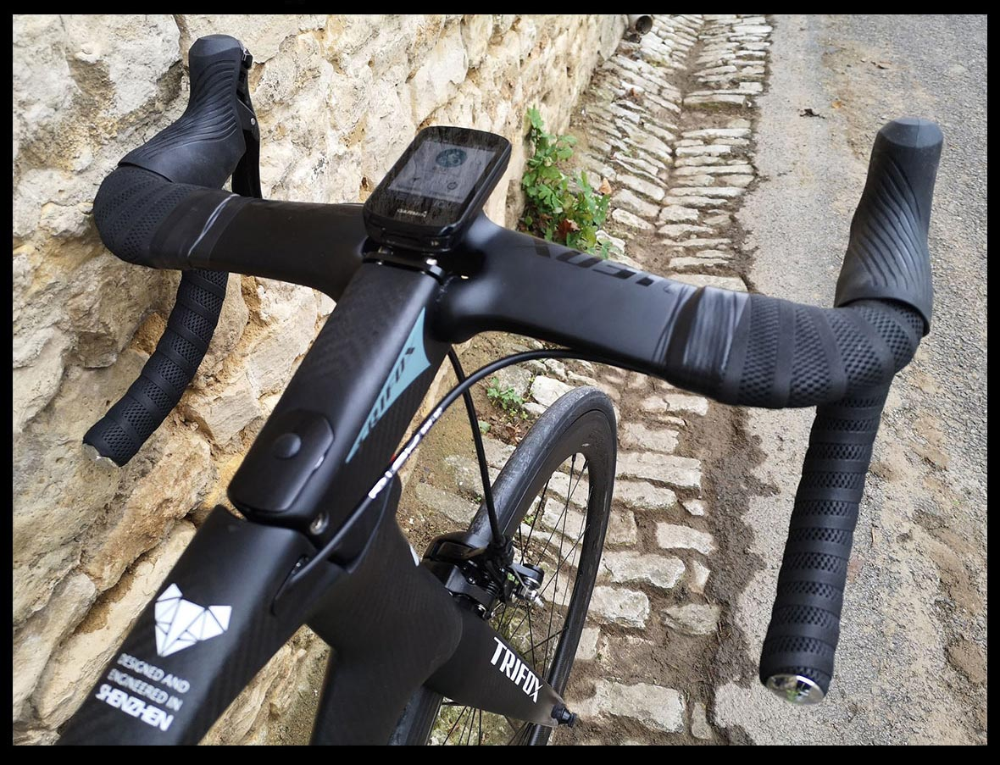
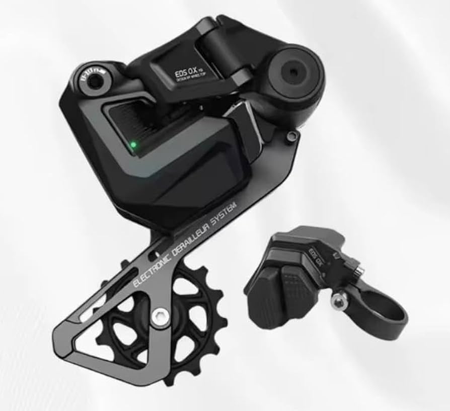

Aerodinámica PuraLas bicicletas de ruta están diseñadas para cortar el viento. Los manubrios curvos integrados esconden todo el cableado por dentro del cuadro de carbono, reduciendo la fricción del aire para maximizar cada pedaleada del atleta en tramos planos. |
 |
|
 |
Transmisión ElectrónicaLos cambios electrónicos inalámbricos realizan transiciones entre piñones en milisegundos de forma exacta. Esto garantiza que el ritmo de las piernas no disminuya durante los ascensos de montañas pavimentadas de alta inclinación. |